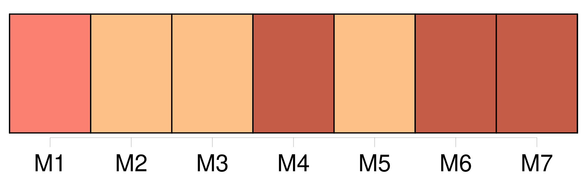
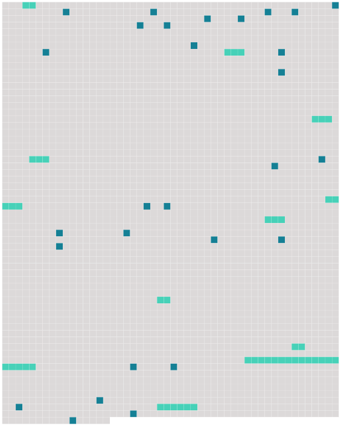

Longueur nb maillons : 38 mentions |
  |
Et le déjeuner [des officiers] s'écoula presque en silence dans cette pièce mutilée, assombrie par l'averse, attristante par son aspect vaincu, et dont le vieux parquet de chêne était devenu solide comme un sol de cabaret. A l'heure du tabac, quand [ils] commencèrent à boire, ayant fini de manger, [ils] se mirent, de même que chaque jour, à parler de [leur] ennui.
Les bouteilles de cognac et de liqueurs passaient de main en main ; et [tous] , renversés sur [leurs] chaises, absorbaient à petits coups répétés, en gardant au coin de la bouche le long tuyau courbé que terminait l'oeuf de faïence, toujours peinturluré comme pour séduire des Hottentots. Dès que [leur] verre était vide, [ils] le remplissaient avec un geste de lassitude résignée. [1 phrases]
Un brouillard de fumée âcre [les] noyait, et [ils] semblaient s'enfoncer dans une ivresse endormie et triste, dans cette saoulerie morne des gens qui n'ont rien à faire. [7 phrases] J'enverrai à Rouen XXXLe DevoirXXX, qui [nous] ramènera des dames ; je sais où les prendre. On préparera ici un souper ; rien ne manque d'ailleurs, et, au moins, [nous] passerons une bonne soirée. [1 phrases]
» [3 phrases]
Aussitôt un frisson de réveil sembla courir dans les esprits ; les poses alanguies se redressèrent, les visages s'animèrent et [on] se mit à causer. [13 phrases]
Non qu'on les eût pillés, le major comte de Farlsberg ne l'aurait point permis ; mais Mlle Fifi, de temps en temps, faisait la XXXmineXXX ; et [tous les officiers] , ce jour -là, s'amusaient vraiment pendant cinq minutes. [7 phrases]
Le commandant ouvrit la fenêtre, et [tous les officiers] , revenus pour boire un dernier verre de cognac, s'en approchèrent. [1 phrases]
[Ils] regardaient les grands arbres accablés sous l'averse, la large vallée embrumés par ce dégorgement des nuages sombres et bas, et tout au loin le clocher de l'église dressé comme une pointe grise dans la pluie battante. Depuis [leur] arrivée, il n'avait plus sonné. [5 phrases]
[Le commandant et ses officiers] riaient ensemble de ce courage inoffensif ; et comme le pays entier se montrait obligeant et souple à [leur] égard, [ils] toléraient volontiers son patriotisme muet. [3 phrases] [Les cinq hommes] restèrent là, en tas, quelques minutes, aspirant l'humidité. [2 phrases] Quand [ils] se retrouvèrent de nouveau à la nuit tombante, [ils] se mirent à rire en se voyant tous coquets et reluisants comme aux jours de grande revue, pommadés, parfumés, tout frais. [1 phrases] Malgré la pluie, [on] laissait la fenêtre ouverte ; et l'un d' [eux] parfois allait écouter. [1 phrases]
[Tous] se précipitèrent ; et bientôt la grande voiture accourut, avec ses quatre chevaux toujours au galop, crottés jusqu'au dos, fumants et soufflants. [9 phrases]
» [12 phrases] Alors, toutes ensemble, elles commencèrent à rire comme des folles, tombant sur le ventre de [leurs voisins] , répétant les termes que le baron se mit alors à défigurer à plaisir pour leur faire dire des ordures. [1 phrases]
Bientôt [les hommes eux -mêmes, grisés par cette chair de femme étalée sous leur nez et sous leurs mains] , s'affolèrent, hurlant, brisant la vaisselle, tandis que, derrière [leur] dos, des soldats impassibles [les] servaient. [7 phrases]
Le commandant se leva, et du même ton qu'il aurait pris pour porter la santé de l'impératrice Augusta, il but : [1 phrases]
[Ils] se levaient l'un après l'autre, cherchant de l'esprit, s'efforçant d'être drôles ; et [les femmes, ivres à tomber] , les yeux vagues, les lèpres pâteuses, applaudissaient chaque fois éperdument. Le capitaine, voulant sans doute rendre à l'orgie un air galant, leva encore une fois son verre, et prononça : « À [nos] victoires sur les coeurs!! [1 phrases] Et envahi brusquement de patriotisme alcoolique, il cria : « À [nos] victoires sur la France!! |
 |
La ressource peut être téléchargée sur la page Ortolang
Si vous avez des questions ou vous voyez des erreurs, merci d'envoyer un mail à silvia.federzoni89@gmail.com
Site développé par S. Federzoni (contact)